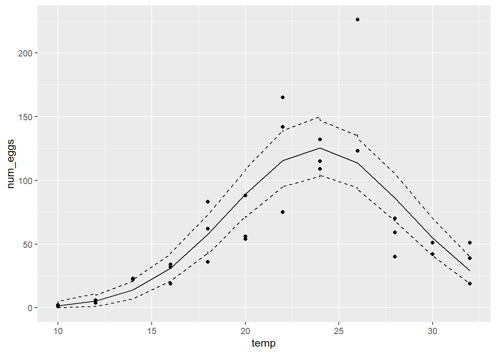
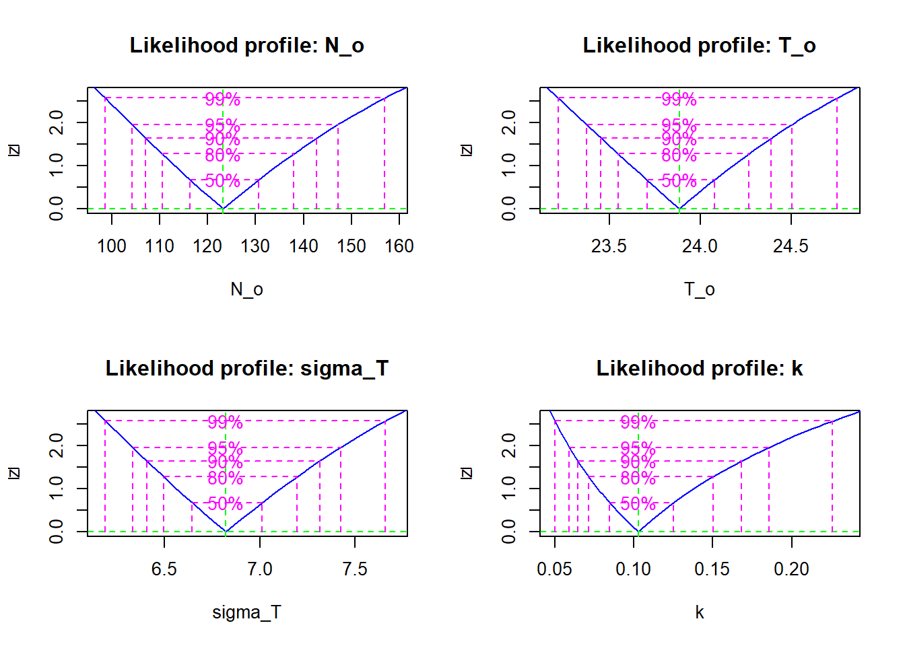
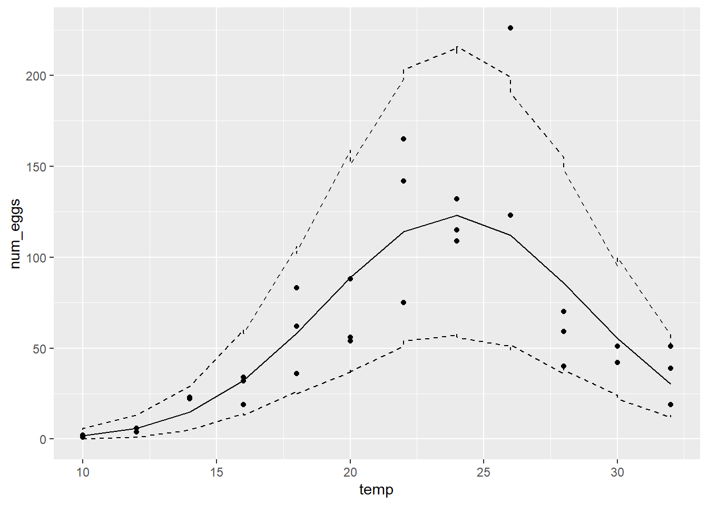

Maximum likelihood - Solutions
Data
The dataset thermal_range.csv is the result of an experiment to determine the effect of temperature (temp) on the number of eggs (num_eggs) produced by a species of mosquito. Three replicates were measured for temperature values between 10 and 32 degrees Celsius.
therm <- read.csv("../donnees/thermal_range.csv")
head(therm)## temp num_eggs
## 1 10 1
## 2 10 1
## 3 10 2
## 4 12 4
## 5 12 4
## 6 12 61. Poisson model
We assume that the mean number of eggs produced follows a Gaussian function centered on an optimal temperature. (This function has the same shape as a normal distribution, but it is not a probability.)
\[N = N_o \exp \left( - \frac{(T - T_o)^2}{\sigma_T^2} \right) \]
In this equation, \(N\) is the mean number of eggs produced at \(T\), \(T_o\) is the optimum temperature, \(N_o\) is the number of eggs produced at \(T_o\) and \(\sigma_T\) represents the tolerance (the larger \(\sigma_T\) is, the slower the production decreases around the optimum).
- Produce a graph of num_eggs vs. temp for this dataset. Using this graph, answer the following questions.
Does the number of eggs appear to reach a maximum with a symmetrical decrease on both sides of the maximum as predicted by the equation above?
Does the variance between replicates appear to be homogeneous?
Solution
library(ggplot2)
ggplot(therm, aes(x = temp, y = num_eggs)) +
geom_point()
The number of eggs seems to reach a maximum around 25 degrees. The variance does not seem homogeneous, being greater for temperatures where the number of eggs is greater.
- To model these data, we will use a Poisson distribution, where the mean \(\lambda\) corresponds to the \(N\) calculated according to the above equation.
Why is it preferable here to use a Poisson distribution rather than a normal distribution to represent the random variation in the number of eggs around the predicted mean value?
Solution
These are count data (integers > 0) and their variance appears to increase with the mean, as predicted by the Poisson distribution.
- Create an R function to calculate the negative log-likelihood of the observed number of eggs as a function of the model parameters \(N_o\), \(T_o\) and \(\sigma_T\). Note: The function
dpois(y, lambda, log = TRUE)is used to compute the log of the probability of a vector of datayfollowing a Poisson distribution with a vector of meanslambda.
Solution
temp_nll <- function(N_o, T_o, sigma_T) {
mu <- N_o * exp(-((therm$t-T_o)/sigma_T)^2)
-sum(dpois(therm$num_eggs, lambda = mu, log = TRUE))
}- Use the
mle2function to estimate the three parameters of the model according to maximum likelihood.
For this problem, it is necessary to specify bounds for each parameter, to prevent the optimizer from moving too far away from plausible values. In the function mle2, the lower and upper bounds are given by the arguments lower and upper, e.g.: mle2(..., start = list(...), lower = c(no = 1, to = 5, s_t = 1), upper = c(...). Note that these arguments are specified by a vector c(...) whereas start (the initial values) are specified by a list.
You can try different values for the bounds, however the lower bounds of \(N_o\) and \(\sigma_T\) should be at least 1, the upper bound of \(\sigma_T\) should not exceed the range (max-min) of temperatures tested; likewise, the bounds for \(T_o\) should be realistic values of temperature.
Note: You can ignore the warning Warning: bounds can only be used with method L-BFGS-B (or Brent). However, if you get an error, try again by adjusting the parameter bounds.
Solution
library(bbmle)## Loading required package: stats4res <- mle2(temp_nll, start = list(N_o = 50, T_o = 20, sigma_T = 2),
lower = c(N_o = 1, T_o = 0, sigma_T = 1),
upper = c(N_o = 1000, T_o = 50, sigma_T = 20))## Warning in optim(par = c(N_o = 50, T_o = 20, sigma_T = 2), fn = function (p) :
## bounds can only be used with method L-BFGS-B (or Brent)res##
## Call:
## mle2(minuslogl = temp_nll, start = list(N_o = 50, T_o = 20, sigma_T = 2),
## lower = c(N_o = 1, T_o = 0, sigma_T = 1), upper = c(N_o = 1000,
## T_o = 50, sigma_T = 20))
##
## Coefficients:
## N_o T_o sigma_T
## 125.254248 23.862510 6.702089
##
## Log-likelihood: -232.92- Visualize the profile likelihood for each parameter and calculate the 95% confidence intervals. Do you think the quadratic approximation would be good for these parameters?
Solution
pro <- profile(res)
plot(pro)
confint(pro)## 2.5 % 97.5 %
## N_o 118.725387 132.059041
## T_o 23.643472 24.088414
## sigma_T 6.456217 6.970186The quadratic approximation would be good because the profile likelihood for each parameter (after square root transformation) follows a straight line.
- Let us now compare the model predictions with the data.
Add a column to the dataset for the model mean predictions (the \(\lambda\) of the Poisson model for each observation), obtained by replacing the maximum likelihood estimates in the \(N\) equation above.
Simulate 1000 data sets from the Poisson distribution with the estimated \(\lambda\) values. To generate a dataset, use
rpois(n, lambda)where \(n\) is the number of observations (the number of rows in the original dataset) and \(\lambda\) is the column of mean predictions. To generate 1000 datasets, usereplicate. The result ofreplicateshould be a matrix of \(n\) rows and 1000 columns (1 column per simulation).To obtain a 95% prediction interval for each observation, calculate the appropriate quantiles for each row of the matrix of simulations with
apply. For example,apply(sim_mat, 1, quantile, prob = 0.025)applies thequantilefunction to each row ofsim_mat, with theprobargument ofquantileset to 0.025. Do the same for the quantile at \(p = 0.975\) and you will get two vectors for the lower and upper bounds of the interval, which you can add to the dataset.
Note: These prediction intervals assume that the parameter estimates are exact and therefore ignore their uncertainty.
- At this point, in addition to
tempandnum_eggs, your dataset contains three columns respectively representing the mean predictions, and the lower and upper bounds of the 95% prediction interval for each observation. Add the mean prediction and the interval to the graph of num_eggs vs. temp, e.g. withggplot, you can addgeom_line(aes(y = mean_pred))to the graph to add a line representing themean_predcolumn of mean predictions, same for the lower and upper bounds of the interval.
From the results, can you tell whether the model represents the general trend of the data and the random variation around that trend?
Solution
# Inserting the estimates from (d)
therm$mu <- 125.3 * exp(-((therm$t-23.9)/6.7)^2)
therm_sim <- replicate(1000, rpois(36, therm$mu))
therm$min <- apply(therm_sim, 1, quantile, prob = 0.025)
therm$max <- apply(therm_sim, 1, quantile, prob = 0.975)
library(ggplot2)
ggplot(therm, aes(x = temp, y = num_eggs)) +
geom_point() +
geom_line(aes(y = mu)) +
geom_line(aes(y = min), linetype = "dashed") +
geom_line(aes(y = max), linetype = "dashed")
The model represents the general trend well, but underestimates the variability. The 95% prediction interval contains only ~70% of the observations (25/36).
2. Negative binomial model
- Repeat parts (c) to (f) of the previous number using a negative binomial distribution instead of the Poisson distribution for the random portion of the model.
Reminder: In the Poisson distribution, the mean and variance are equal to \(\lambda\). In the negative binomial distribution, the mean is equal to \(\mu\) and the variance is equal to \(\mu + \mu^2/\theta\). For this problem, we will use \(k = 1/\theta\) as parameter. If \(\theta > 0\), \(k\) must take a value greater or equal to 0. Since the variance as a function of \(k\) is \(\mu + k \mu^2\), the Poisson distribution corresponds to the case \(k = 0\). Here are the main changes to be made to replace the Poisson model with the negative binomial model:
Add the parameter \(k\) to the log-likelihood function. Replace the call to
dpoiswithdnbinom(y, mu, size = 1/k, log = TRUE)wheremuis the mean prediction, so it is equivalent to thelambdaofdpois.Use a lower bound of 0 for the
kparameter inmle2; the upper bound should be less than 100.To simulate the data, replace
rpoiswithrnbinomand specify the argumentsmu(mean prediction) andsize = 1/k.
Solution
# Likelihood function, estimates and intervals
temp_nll <- function(a, s, m, k) {
mu <- a * exp(-((therm$t-m)/s)^2)
-sum(dnbinom(therm$num_eggs, size = 1/k, mu = mu, log = TRUE))
}
res <- mle2(temp_nll, start = list(a = 50, m = 20, s = 1, k = 1),
lower = c(a = 1, m = 0, s = 1, k = 0),
upper = c(a = 1000, m = 50, s = 20, k = 10))
res##
## Call:
## mle2(minuslogl = temp_nll, start = list(a = 50, m = 20, s = 1,
## k = 1), lower = c(a = 1, m = 0, s = 1, k = 0), upper = c(a = 1000,
## m = 50, s = 20, k = 10))
##
## Coefficients:
## a s m k
## 123.188369 6.821416 23.884264 0.102698
##
## Log-likelihood: -143.93plot(profile(res))
confint(profile(res))## 2.5 % 97.5 %
## a 104.20709233 147.2176826
## s 6.33138839 7.4248342
## m 23.37301405 24.5051418
## k 0.05916351 0.1855639The profile likelihood of the parameters is close to the quadratic approximation, except for \(k\) where it is non-quadratic and asymmetric.
# Predictions according to the parameter estimates
therm$mu <- 123.2 * exp(-((therm$t-23.9)/6.82)^2)
therm_sim <- replicate(1000, rnbinom(36, mu = therm$mu, size = 1/0.103))
therm$min <- apply(therm_sim, 1, quantile, prob = 0.025)
therm$max <- apply(therm_sim, 1, quantile, prob = 0.975)
library(ggplot2)
ggplot(therm, aes(x = temp, y = num_eggs)) +
geom_point() +
geom_line(aes(y = mu)) +
geom_line(aes(y = min), linetype = "dashed") +
geom_line(aes(y = max), linetype = "dashed")
Here the 95% prediction interval contains ~97% of the points (35/36).
- Would it be correct to use the likelihood-ratio test to compare the Poisson model from the previous section to the negative binomial model?
Solution
The likelihood-ratio test does not apply when the null hypothesis corresponds to a limit of the possible values of the parameter. Here, the Poisson model corresponds to the negative binomial model with \(k = 0\), which is at the limit of possible values for this parameter.
- Whether or not you answer yes or no to (b), do the results clearly show whether or not a negative binomial model is justified (relative to the simpler Poisson model) for these data?
Solution
Yes, the model’s predictions are more consistent with observations and the log-likelihood of the negative binomial model (-144) is much higher than that of the Poisson model (-233).